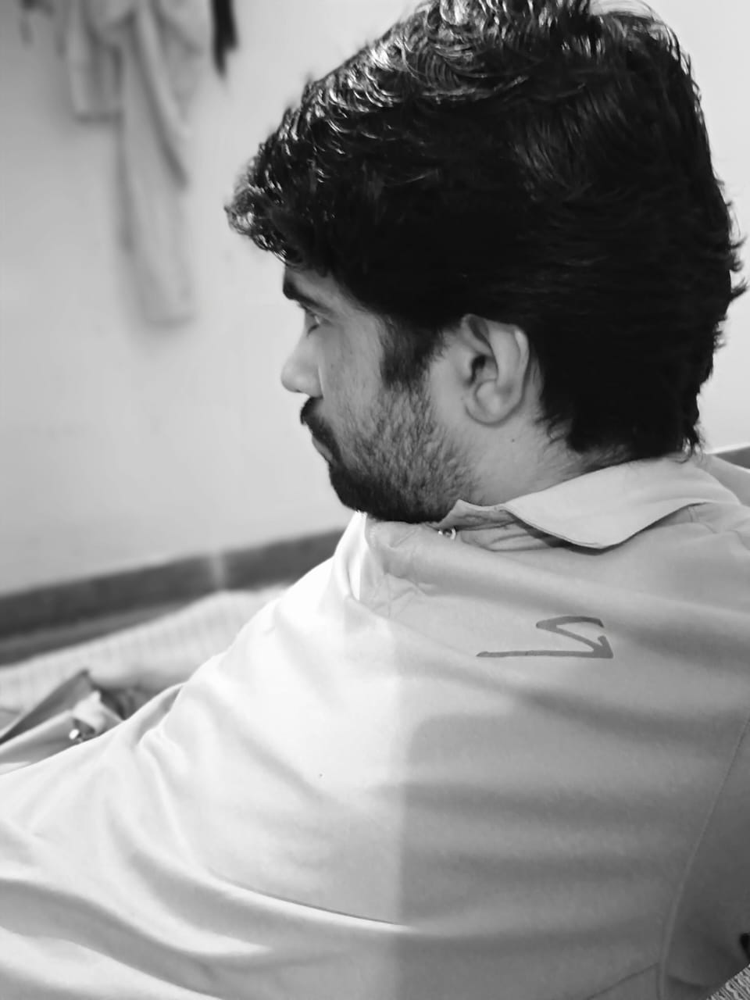

Creative & Operations
Vikash Saran
Bringing structure and execution to creative work.
Exploring artist management, workflow automation and digital projects with an operations-first mindset.

About me
A little
about me.
I’m Vikash — a self-driven operations and digital projects professional based in Churu, Rajasthan.
For me, an idea only matters when it actually runs: built, structured, and maintained with total accountability.
Most of what I know, I learned by doing. Over the past year, I’ve managed operations at Sonu Corporation, handling the day-to-day execution and workflows that keep a business moving forward. Alongside that, I take on client digital projects — websites, platforms, and custom applications — using tools like n8n to automate the friction out of everyday processes.
I’ve also worked inside fast-paced social media and communication campaign teams alongside state and national representatives like Abhijeet Gandhi and Reshma Alam, managing public-facing channels, content execution, and digital outreach logistics.
Now, I’m directing that same structured instinct toward independent music.
Artist work is creative at the front and intensely organizational behind the scenes. That second half is what draws me in — making sure the planning, communication, and follow-through are solid enough that the artist never has to worry about them.
- Based in
- Churu, Rajasthan
- Focus area
- Creative Operations, Digital Workflows & Artist Coordination
- Education
- Bachelor of Arts (BA), Rajasthan
Experience
Where I’ve
worked.
Operations, client digital projects, and campaign communication.
-
Past year → Present
Operations Manager
Sonu Corporation
Managing day-to-day operations and business execution. Keeping work structured, coordinating quotations, and maintaining workflows that hold up when the week gets busy.
- Managing day-to-day operations and business execution
- Coordinating quotations and the follow-through behind each one
- Structuring operational workflows so work doesn’t stall between people
-
Client work
Digital Projects & Application Development
For clients
Building websites and custom applications for clients, focused on practical utility and clean presentation — taking requirements from concept through to something that works, then maintaining what I build.
- Designed and developed websites and digital platforms end to end
- Built custom applications: Billoso, Syllabso, Quisso, SoStill, GKxSo and SOS
- Used n8n automation to connect processes and remove manual repetition
-
Campaign teams
Campaign & Communication Coordination
Political & public social media teams
Worked alongside state and national representatives of Indian National Congress — including Abhijeet Gandhi and Reshma Alam — within social media and communication campaign teams, managing public-facing channels and digital outreach logistics. Also Worked as a social media manager for a few independent Politicians, handling their social media accounts and content strategy.
- Managed public-facing social channels and content execution
- Handled digital outreach logistics across a distributed team
- Tracked what was going out, to whom, and by when
Tools I work with
- n8n Automation
- AI Agents
- Website Development
- Android App Development
- Android Studio
- Python & Web Technologies
- Notion
- Google Workspace
- Excel · Google Sheets
Project & Information Management
- Trello / Asana / Jira Task tracking, kanban boards and project pipelines — the backbone of task tracking across artist management and content rollouts.
- Airtable Advanced spreadsheets and database management for content calendars and media directories — a premium alternative to Excel and Google Sheets.
Communication & Collaboration
- Slack / Discord Clean communication spaces for distributed teams, creative collaborators and community management.
- WhatsApp Business API Direct fan and artist outreach, plus quick day-to-day coordination.
AI & Productivity Enhancers
- OpenAI ChatGPT / Claude APIs AI assistance for research summaries, drafting communication and content brainstorming.
- Make.com (Integromat) A second powerful automation platform alongside n8n, for when multi-app integrations are needed.
Content & Asset Organization
- Google Drive / Dropbox Cloud storage for organizing and securely sharing heavy media — audio drafts, video shoots and press kits.
- Canva Quick social media assets, text graphics and basic presentation layouts.
Skills & tools
Capabilities &
expertise.
The operational, technical and coordination skills I bring — the layer that keeps creative work running quietly in the background.
Operations & Workflow Design
-
Operational Workflow Design
Operational workflow planning and day-to-day business execution.
-
Vendor & Quotation Coordination
Vendor tracking, quotation coordination, and process optimization.
Digital & Technical Development
-
Coding & Web Development
Building functional websites, frontend interfaces, and managing clean code via Git/GitHub.
-
App & Product Prototyping
Developing Android applications in Android Studio — Billoso, Syllabso, Quisso and others — from scratch.
-
Workflow Automation
Designing multi-step automated pipelines using n8n to eliminate repetitive manual tasks.
-
AI Agents for Work Automation
Building AI agents that take on real operational work — research, drafting, triage and follow-through — so routine process steps run without supervision.
Creative, Visual & Cartoon Tools
-
Visual & Graphic Execution
Designing digital layouts, promotional banners, and assets using Canva and Figma.
-
Animation & Motion Concepts
Exploring visual design, 3D modeling fundamentals, and basic motion and cartoon elements using tools like Blender.
-
Content & Asset Organization
Structuring creative files, media drafts, and schedules.
Communication & Project Coordination
-
Stakeholder Communication
Cross-team stakeholder communication and campaign outreach logistics.
-
Task Prioritization & Tracking
Task prioritization, meeting summarization, and clear information tracking.
Core skill set
Selected work
What I
build.
Three kinds of work I’ve been doing — platforms, applications, and the automation that keeps both of them running.
-
Digital Platforms & Web Infrastructure
Designing and developing websites and digital platforms with clean presentation and dependable functionality — the infrastructure a project needs before anyone sees the creative part.
- Web architecture & front-end
- Deployment & maintenance
- Clean, functional presentation
Live site sonucorporation.com (opens in a new tab)
-
Productivity & Learning Apps
Custom applications built for clients, focused on practical utility and clean presentation — each one started as a real problem that needed solving.
- Billoso
- Syllabso
- Quisso
- SoStill
- GKxSo
- SOS
-
Workflow Automation
Building automated workflows with n8n that connect steps and remove repetitive manual work, so a process runs to the same standard every time without someone watching it.
- n8n workflow design
- Tool-to-tool integration
- Fewer manual handoffs
Direction
Why artist
management.
Artist management sits where people, creativity, organisation and execution meet. I want to be good at that intersection — and I’d rather do it behind the scenes than in front of them.
Almost none of the work around an independent artist is glamorous. It’s messages, schedules, deadlines, files, follow-ups and decisions about what happens next. But that is the work that decides whether the creative part gets to happen at all.
My background is in operations, digital projects and automation, so that layer is exactly what I’m drawn to. Keeping communication clear, plans written down, content coordinated and moving parts tracked — quietly and consistently, so the artist can put their attention entirely on the music.
I’m not claiming years inside the music industry, and I’d rather be honest about that than dress it up. What I bring is the ability to build systems, follow plans through, communicate without friction and learn quickly inside an unfamiliar world.
I’m looking for a place to be genuinely useful, not for a title.
Strengths
What I bring.
-
Structure & Organization
Breaking large, complex ideas into clear, manageable tasks. I keep moving parts transparent and structured so that no critical step relies solely on memory.
-
Proactive Initiative
Comfortable learning independently and taking the first step without waiting to be told. Almost everything I know was self-taught through hands-on building and execution.
-
Technology & Automation
Leveraging modern digital systems — custom n8n workflows, AI agents, web infrastructure, and utility scripts — to eliminate repetitive manual friction and keep processes running smoothly.
-
Contextual Adaptability
Thriving in unfamiliar territories, picking up new concepts rapidly, and designing frameworks on the fly — an essential mindset when moving into dynamic creative fields.
Contact
Let’s build
something meaningful.
For opportunities, collaborations, or a conversation about working together.
Send an emailCurrently
- Based in Churu, Rajasthan
- Focus Creative Operations, Digital Workflows & Artist Coordination
- Background BA, Rajasthan